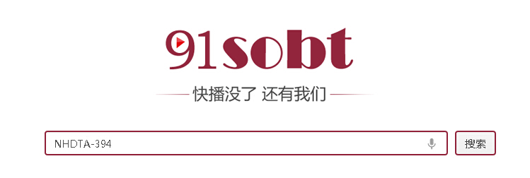
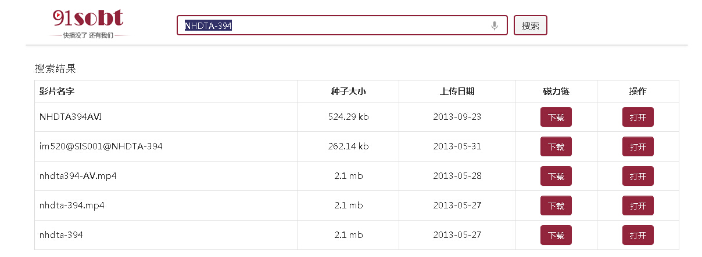

1、输入网址链接：“91sobt.com” 或者 “91sobt.com” 。
2、在搜索框中输入你要搜索的相关字眼，如：
“波多野结衣”、“NHDTA-394”、“IPTD-597”、“身長”、“近藤あさみ”、“MIDE-033”、“沙緒里”、“日向小夏”、“KOK-009”、“IPTD_843”、“RBD254” ，然后点击搜索按钮。

3、在结果列表中点击红色区域，就可以直接通过磁力链接下载了。

4、磁力链接是什么：
磁力链接是BT进入2.0的一个必然趋势，简单化了原有的2次下载，省去了下载种子文件的过程。
5、磁力链接需要什么软件：
迅雷，BitComet
6、宅男们最关心的事：什么是番号！
番号，这个词语在不同领域有不同的意思，我们这里只讲它在AV界的含义。
简单地说，番号就是片子的唯一编号，一般在片子封面图片就能看到。找到番号后要下载片子就很简单了。使用番号下载片子的方法我在楼下会详解。
这部的番号：FST-019